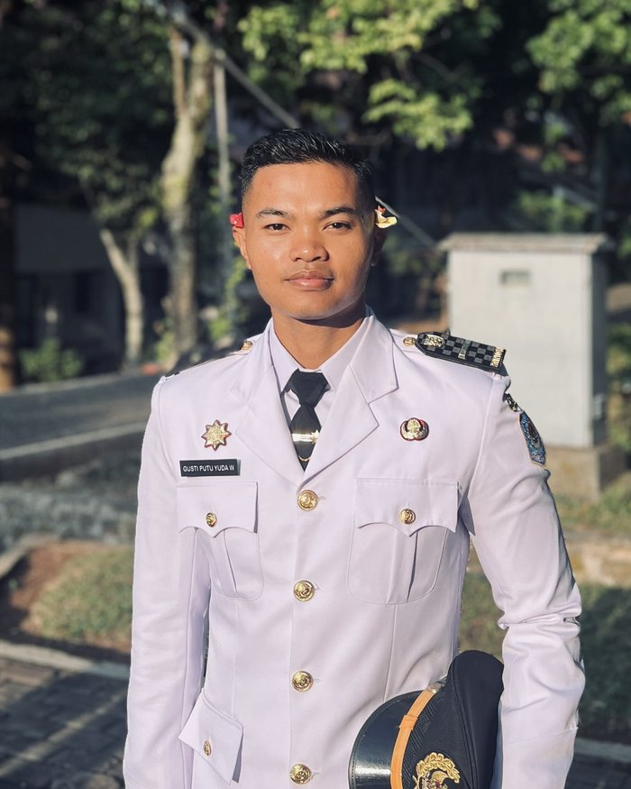
Gusti Putu Yuda Wirashana, S.Tr.IP
Founder & pengajar utama psikologi dan strategi seleksi
Semua yang kamu butuhkan untuk berlatih ada di satu tempat, dengan satu akun.

Kerjakan TWK, TIU, dan TKP berwaktu dengan tampilan yang dibuat mirip CAT resmi.
Mulai sekarang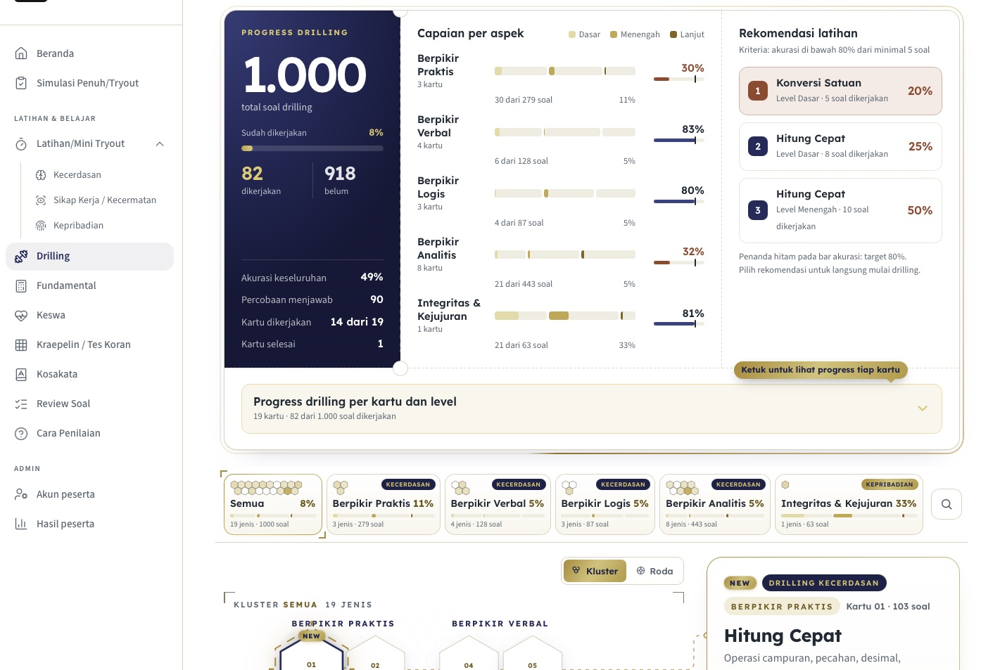
Latihan kecerdasan, kecermatan, dan kepribadian dengan capaian per aspek.
Mulai sekarang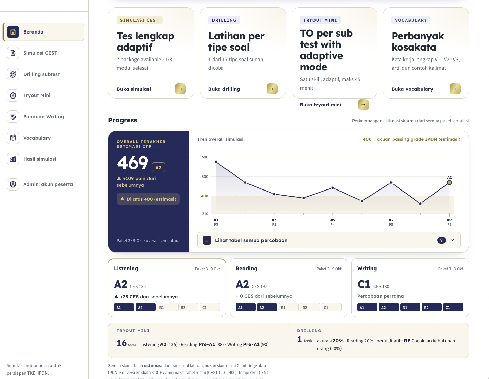
Latihan bahasa Inggris untuk seleksi IPDN: listening, reading, dan writing.
Mulai sekarangBilangan berikutnya dari deret 3, 7, 15, 31, 63, … adalah
Tiap soal dijelaskan dengan bahasa sederhana, termasuk kenapa opsi lain gugur. Coba satu soal di samping.
Mulai sekarangDari daftar sampai tryout pertama bisa selesai hari ini juga.
Buat satu akun D'Ajiks. Akun yang sama dipakai untuk semua kelas.
Pilih kelas dan versinya, lalu bayar langsung di web. Kelas muncul di Paket Saya.
Kerjakan tryout, lihat nilai per subtes, lalu baca pembahasannya.
Pilih kelas, lalu pilih paket yang sesuai.
DATA CONTOH: nama paket dan harga belum asli (kisaran Al Faiz). Ganti sebelum dipublikasikan.
Kelas offline
Selain latihan di portal, kamu bisa ikut kelas langsung bersama pengajar dan pelatih jasmani D'Ajiks.
Rincian dari program Persiapan POLRI D'Ajiks.
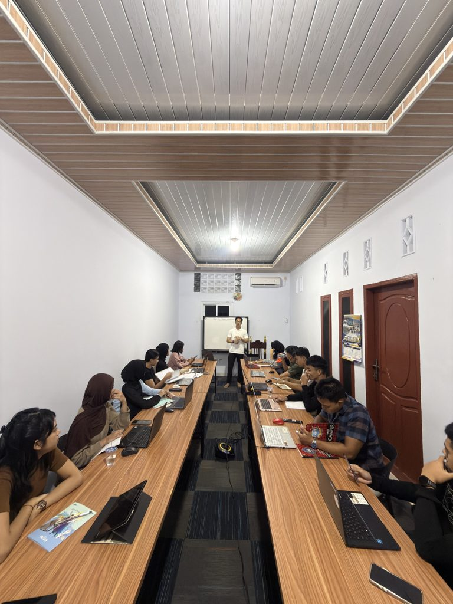
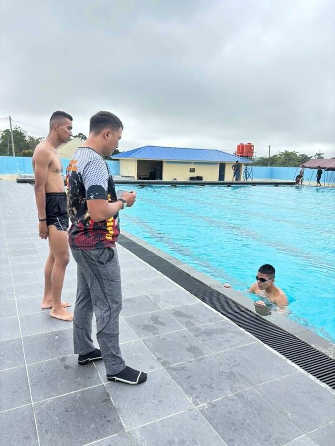
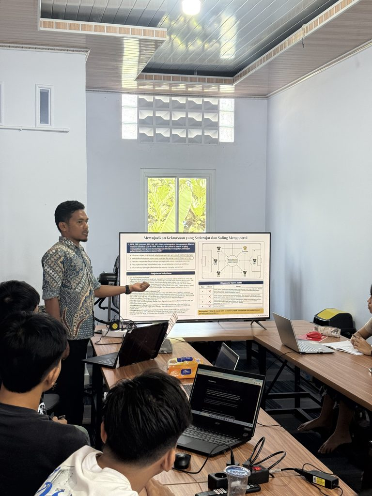
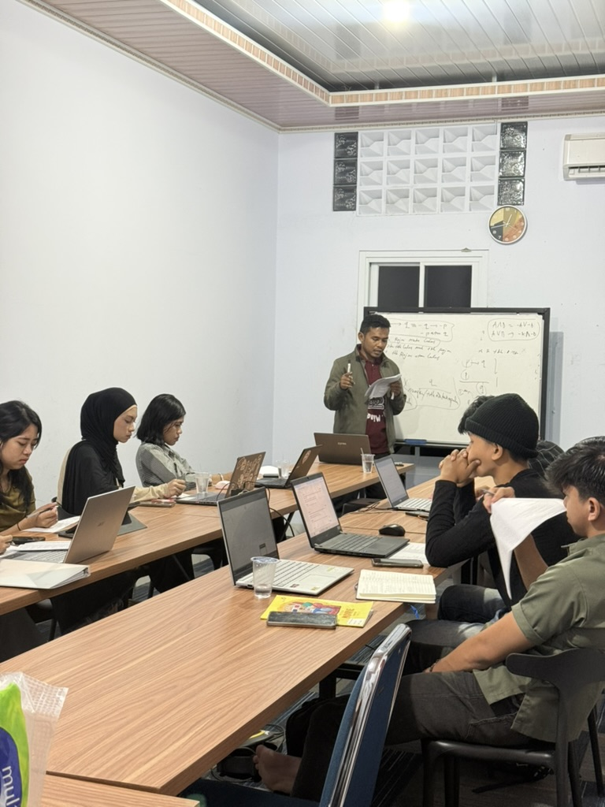
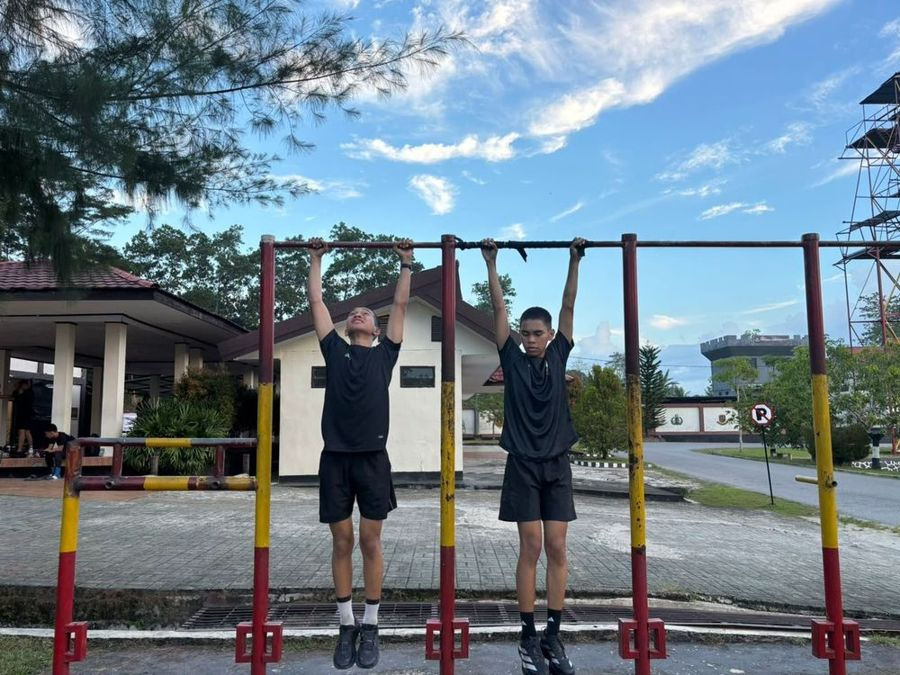
Testimoni
Dikutip dengan ejaan asli. Peserta setuju namanya ditampilkan.
Tes psikologi IPDN, 22 Oktober 2026, menurut cerita peserta sendiri.
74
Nilai adik Feby. Simulasi terakhirnya 55.
72
Nilai Haikal, peserta asal Papua.
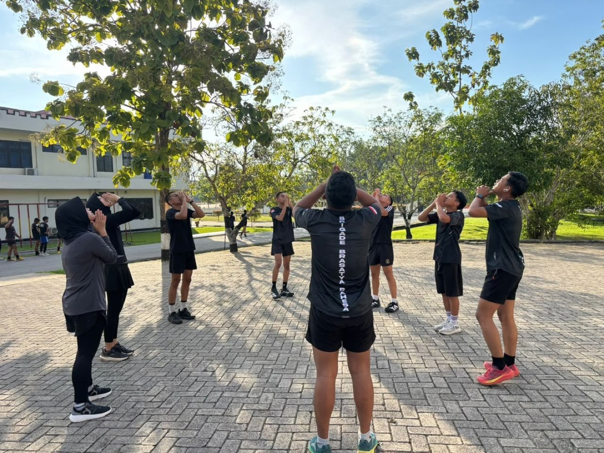
“alhamdulillah nilai saya 72 asal pendaftaran papua, terimakasih atas pengajaran dan tips" nya kak”
“Semaleman overthink sebenernya karena simulasi terakhir dpet 55. Tp alhamdulillah berhasil dpet sesuai target bahkan lebih”
“rasanya persis pake banget bang, bahkan ada beberapa yang berasa dejavu ngerjakan waktu malam gitu”
Dikutip dengan ejaan asli dari pesan WhatsApp. Banyak yang dikirim sesudah tes TKBI asli.
Simulasi CEST di aplikasi D'Ajiks. Estimasi ITP, bukan skor resmi.
599
Estimasi ITP Laura. Listening CES 180 (C1).
594
Estimasi ITP Christmas Angel. Listening naik sampai 600++.
“Alhamdulillah bang saya barusan selesai tes TKBI.. Alhamdulillah sesuai sama di platform malah beberapa soalnya lebih hots di paltform bang...”
“Drilling soal nya juga banyak banget dibuat diwaktu yang terbatas ini. Bersyukur banget ketemu web dan grup belajar ini.”
“Di listening dan Reading banyak kosakata-kosakata yang dominan di level b1-b2 tapi karna udah terbiasa latihan di web abang akhirnya jadi tau maksud dari soal itu”
“punya saya yang keluar tadi sesuai drilling subtest”
“…soal writingnya juga mirip konteksnya jadi kek dah ada mapping nya di kepala…”
“…saya bener bener emang dari nol yg bahkan ga ada bayangan sama sekali tentng apa itu CEST,dengan platfrom yg disediakan oleh kakak, langsung kebayang ka dan bahkan sampai bener bener ngerti step by step sub tes yg bakal dihadapi nanti kak…”
“super keren kak soal"nya dan ga lupa ada timing nya juga… Web nya juga friendly user bgt . Pokoknya bintang 10”
“…sejauh ini reading dan writing mirip kali ama punya abang ,apa lagi yg reading isi bagian kosong pakai ketikan sendiri…”
“…aku jadi bener" tau perkembangan aku terus kekurangan aku dimanaa. waktu awal aku coba platfrom kaka listening dan writing nya jelekk, skarang puji Tuhan udahh nyampe 500 hihiii.”
“…berkat drilling yang banyak banget kakak kasih, listening ku bisa up to 600++, sukses teruss kakk!”
“cm mau ngabarin aja berkat website abang.. pendalaman soal ku berkembang pesat”
“…saya paling dasar pengetahuan tentang bahsa Inggris, tetapi krna adanya platform ini jdinya saya sangat terbantu, bukan hanya tmpt tryout doang, tetapi adanya pembelajaran tambahan serta evaluasi, yg dimana kita tahu titik kelemahan kita sndri…”
“…ternyata pas ak cobain emng nyesuain in level kita, soalnya aku cuma bisa latihan wriiting yg langsung ada levelnya, ternyata disini reading sama listening nya juga ada level…”
“siapp bang platform nya bantu banget dari yang awalnya masih raba raba dan bingung sm sistem cest pelan pelan mulai paham dan ngebantu saya buat persiapan tes tkbi besok keren banget pokokk”
“…saya yang baru perma kali berhadapan dentgan test bahasa inggris. Meskipun saya tidak pintar dalam berbahasa namun melaui web ini saya mendapat sebuah insight pencerahan…”
“…jujur sangat terbantu dengan web yang kakak buat itu lebih enak dipakai dan lengkap kak dan untuk harga nya itu kalau menurut saya udah murah banget dapat fitur sebanyak itu”
“…pas ku liat sekilas kok kaya menarik ya dari segi tampilan mngknya malem itu lngsng ku beli tanpa cacicu wkwk…”
“Mantap lah kak pokoknya… cocok buat ngedrill banyak latihan juga”
PERLU DIPASTIKAN: izin menampilkan nama peserta TKBI.
Pengajar
Pengajar yang menyusun soal, membahas jawabanmu, dan mendampingi latihan sampai hari tes.

Founder & pengajar utama psikologi dan strategi seleksi
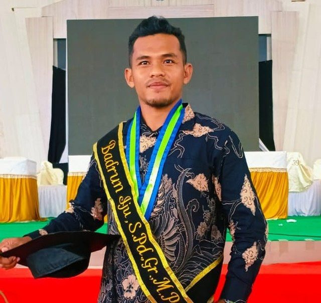
The All Rounder: Master SKD dan psikotes
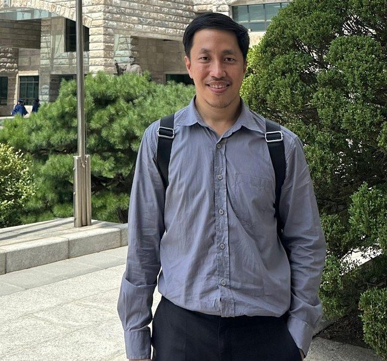
Mentor utama bahasa Inggris dan TKBI (CEST)
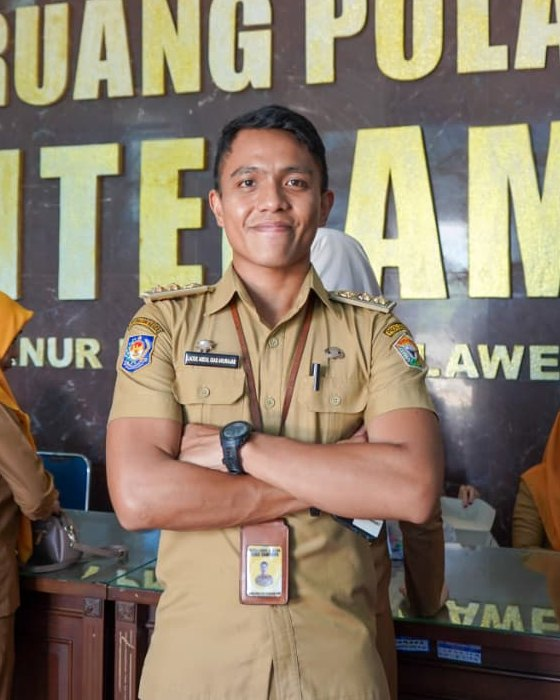
Purna Praja Angkatan 27, mentor TKP dan TWK
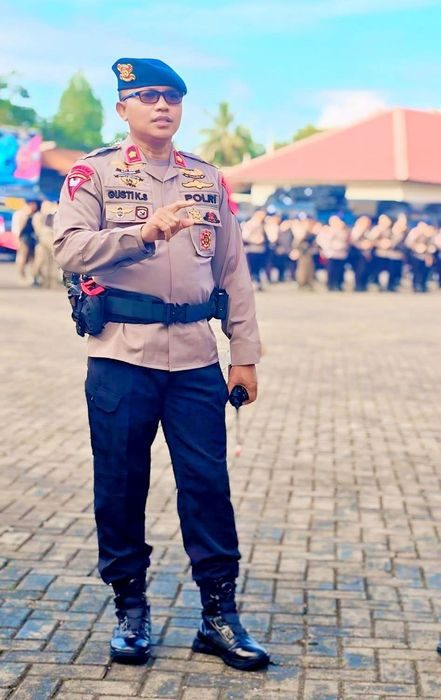
Instruktur hypnoteaching
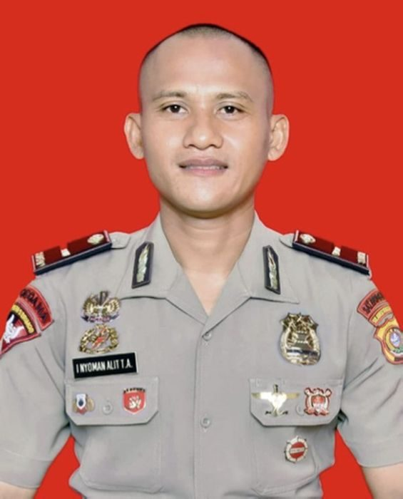
Pembina utama fisik
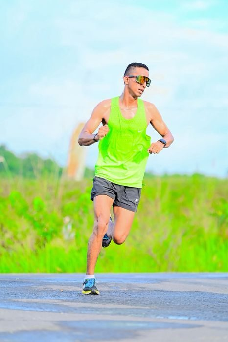
Instruktur jasmani
FAQ
Jawaban singkat sebelum kamu mendaftar.
Ada lima kelas: SKD Kedinasan, IPDN, Persiapan POLRI, Persiapan TNI, dan CPNS. Semuanya bisa dibuka dengan satu akun.
Akses penuh berisi materi, tryout, dan pembahasan. Tryout saja berisi tryout dan pembahasannya, tanpa materi.
Masa aktif setiap paket tertulis di kartunya, di bagian Kelas.
Ada, di Kendari. Lihat bagian Kelas offline untuk rinciannya. [Jadwal menyusul]
Ya. Kelas yang kamu beli akan muncul di Paket Saya pada akun yang sama.
Tryout dikerjakan berwaktu dengan tampilan yang dibuat mirip CAT resmi.
Nilai per subtes keluar otomatis begitu tryout selesai, lengkap dengan pembahasan tiap soal.
Lewat QRIS, virtual account, atau e-wallet langsung di halaman bayar.
Setelah pembayaran terkonfirmasi, kelas muncul di Paket Saya dan bisa langsung dipakai.
Di halaman bayar, buka bagian "Punya kode promo?" lalu masukkan kodenya.
Admin D'Ajiks
WhatsApp [nomor menyusul]
Pertanyaanmu belum terjawab? Tanyakan langsung ke admin lewat WhatsApp.
Daftar sekarangDATA CONTOH: jawaban mengikuti rancangan portal, mohon diperiksa.
Prinsip D'Ajiks
D'Ajiks Akademi dibangun di atas prinsip itu: cerdas di kelas, kuat di lapangan, tangguh dalam karakter.